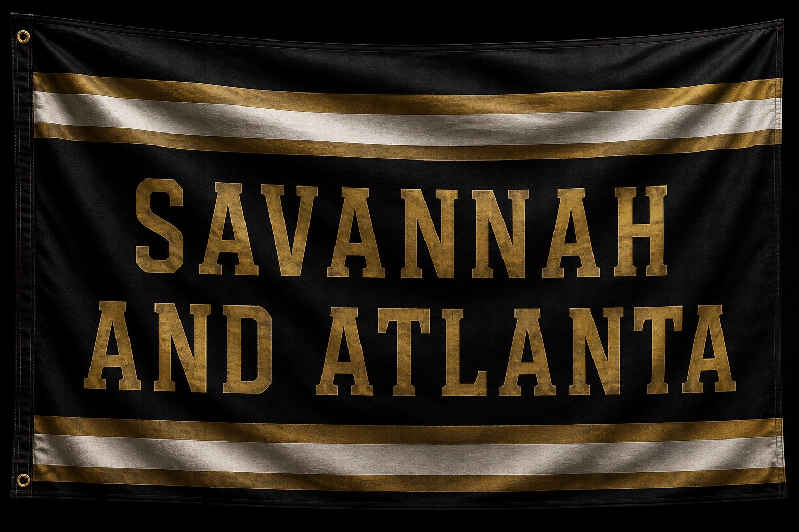

Norfolk Southern Heritage Collection

Exhibit No. 1065
The SD70ACe is one of Norfolk Southern's primary road freight locomotives. While NS 1065 honors the historic Savannah & Atlanta Railway through its heritage paint scheme, it continues to serve in daily freight service across the modern Norfolk Southern system.
In 2012, Norfolk Southern introduced NS 1065 as part of its Heritage Unit Program, celebrating the railroads that helped shape today's Norfolk Southern system. This locomotive honors the Savannah & Atlanta Railway by carrying a modern interpretation of its classic black, white, and gold appearance.
Rather than preserving history inside a museum building, Norfolk Southern placed history back onto the main line. Every freight train led by NS 1065 continues the legacy of the Savannah & Atlanta Railway while serving customers across the railroad today.
Heritage Units serve as moving historical exhibits. Instead of displaying railroad history behind glass, they allow thousands of people to experience that history every day as they travel across the Norfolk Southern network.
Every locomotive has a story, and every railfan has memories attached to the trains they've documented. NS 1065 has become one of those locomotives for me. I've been fortunate enough to document it several times, and every encounter has added another chapter to this exhibit.
One memory stands above the rest. While spending time inside Norfolk Southern's Elkhart Yard with friends, I watched NS 1065 race past on an intermodal train. There wasn't time for a photograph or a video—it was simply one of those unexpected moments that happened too quickly. Even without a camera, it's one of my favorite memories connected to this locomotive.
That's one of the reasons this museum exists. Not every railroad memory is captured on film. Some moments only live in our memories, and those stories deserve to be preserved alongside the photographs and videos.
Watching NS 1065 lead a fast intermodal through Elkhart Yard while spending the day railfanning with friends. No photo. No video. Just one unforgettable moment.